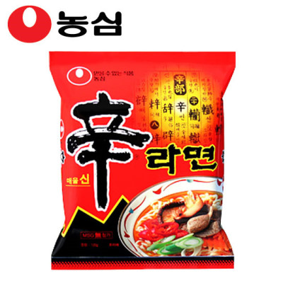

辛(매울 신)'[A]이라는 이름은 제품의 특징인 매운맛을 나타낸다. 제품에 표기는 한자로 되어있지만, 한글로는 일반적으로 ‘신라면’이라고 표기한다. 그밖에 영어로는 ‘Shin Ramyun’ , 일본어는 ‘辛ラーメン’, 중국어는 ‘辛拉麵’으로 표기하고 읽는다. 국가별로 ‘라면’을 표현하는 일반적인 표현에 따라서 Shin Ramen, Shin Ramien 이라고 쓰이는 경우도 있다. 한편, 신라면의 신(辛)자가 한글 "푸"와 비슷하여 "푸라면"이라는 말이 생기기도 하였다. 이 별칭은 《연예인 지옥》과 《1번가의 기적》에도 등장했다.[5]. 그리고 辛과 幸이 비슷하다는 점에서 '행라면'이라는 말도 나왔다.
면에는 소맥분, 팜유, 소금 등이 들어가고 분말 스프에는 마늘, 생강, 고추, 설탕 등이 들어가고 건더기 스프에는 건조 채소(표고버섯, 당근, 골파, 마늘 등)와 건조 해초가 들어있다
신라면 블랙 출시 이후, 제품 광고의 표현이 허위·과장 표시에 해당('설렁탕 한그릇의 영양이 그대로 담겨 있다', '완전식품에 가까운 식품' 등의 표현)된다고 판정되어 시정명령과 함께 과징금을 부여받았다. 이와 같은 공정위의 판단이 억지제재라는 지적도 있었다.[16] 제조사 농심은 출시 4개월만인 2011년 8월 30일 신라면 블랙의 대한민국에서의 유통을 중단하고 그밖의 외국에서만 판매하기로 결정하였다. 이후 고객의 요청에 의해 1년 2개월 만인 2012년 10월, 대한민국에서의 유통이 중단되었던 신라면 블랙을 재출시하였다.
